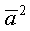
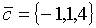

ЗАНЯТИЕ 2.3. СКАЛЯРНОЕ ПРОИЗВЕДЕНИЕ ВЕКТОРОВ
Контрольные вопросы
- Дать определение скалярного произведения двух векторов. Какие значения могут получиться в результате скалярного произведения?
- Перечислите свойства скалярного произведения.
- Чему равно скалярное произведение вектора самого на себя?
- Как вычислить скалярное произведение, если векторы заданы своими координатами в ортонормированном базисе?
- Сформулируйте необходимое и достаточное условие перпендикулярности двух векторов.
- Как найти угол между векторами?
Задачи
- Векторы
 и
и  образуют угол
2/3 π
. Зная, что , вычислить:
образуют угол
2/3 π
. Зная, что , вычислить:
1) ;
2) ;
3) ;
4) ;
5) ;
6) ;
7) .
- Даны векторы .
Вычислить
 ;
.
;
.
- Даны единичные векторы
 ,
удовлетворяющие условию .
Вычислить
,
удовлетворяющие условию .
Вычислить
.
- Даны векторы ,
удовлетворяющие условию .
Зная, что , определить
.
- Известно, что .
Определить, при каком значении k векторы
будут взаимно
перпендикулярны.
- Даны вершины треугольника А(-1;-2;4), В(-4;-2;0) и С(3;-2;1). Определить его
внутренний угол при вершине В и внешний угол при вершине А.
- Вычислить проекцию вектора
на ось вектора
.
- Найти проекцию вектора
на ось, составляющую с координатными осями равные острые углы.
- Даны векторы ,
и
 . Вычислить
.
- Вектор ,
коллинеарный вектору (6,-8,-7.5}, образует острый угол с осью OZ. Зная, что
длина вектора равна 50, найти его координаты.
Ответы
- 1) -6; 2) 9; 3) 16; 4) 13; 5) -61; 6) 37; 7) 73.
- 1) 22; 2)6; 3) 7; 4)-200;
5) 129; 6) 41.
- -3/2.
- -13.
- .
- Внутренний при вершине В= ,
внешний при А= .
- 6.
-
- 5.
- {-24,32,30}.